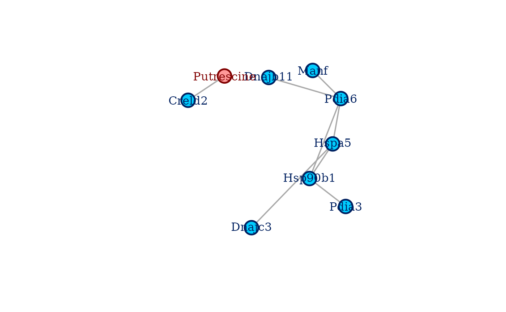

Introduction
This vignette illustrates the basic usage of the coglasso package to reconstruct a multi-omics network. The package implements an R interface to collaborative graphical lasso (Albanese, Kohlen and Behrouzi, 2024), a network estimation algorithm based on graphical lasso (Friedman, Hastie and Tibshirani, 2008) and collaborative regression (Gross and Tibshirani, 2015)
Let us first attach coglasso.
We then choose the multi-omics data set to use. The coglasso package
offers three alternative version of a transcriptomics and metabolomics
data set. We will use multi_omics_sd_small. For further
explanation about the available multi-omics data sets see
help(multi_omics_sd).
colnames(multi_omics_sd_small)
#> [1] "Cirbp" "Hspa5" "P4ha1" "Spred1" "Creld2"
#> [6] "Pdia6" "Hsp90b1" "Hsph1" "Manf" "Pdia3"
#> [11] "Dnajb11" "Dnajc3" "BC004004" "Stip1" "Phe"
#> [16] "Trp" "Putrescine" "PC aa C36:3" "PC ae C32:2"
nrow(multi_omics_sd_small)
#> [1] 30This smaller version of multi_omics_sd has 19 variables,
14 genes and 5 metabolites, and 30 samples. We can directly proceed with
network reconstruction.
Multi-omics network reconstruction
Our objective is to reconstruct a network from this data set using
collaborative graphical lasso. To do so with the coglasso
package, we mainly call a function: bs(). This function
first estimates a network for every combination of hyperparameters we
want to explore, then it selects the best combination according to the
chosen model selection method.
The usual application of bs() requires to give an input
data set to the argument data, the number of variables of
the various omics layers p, and the hyperparameter
settings. Collaborative graphical lasso has three hyperparameters:
,
penalizing “within” same-type interactions,
penalizing “between” different-type interactions, and
,
the weight of the collaborative term. In this vignette we choose to
explore 15 possible penalty values for both “within” and “between”
penalties, and three possible collaboration values. We do so by setting
both nlambda_w and nlambda_b to 15, and by
setting nc to 3. We also decide to focus our search to the
sparse side of possible “within” networks. We achieve this by setting to
a fixed value the ratio between the smallest (least penalizing) and the
largest (most penalizing)
explored. While the default value of these parameter is 0.1 for both
and
,
we decide to set the minimum ratio to 0.6 for
.
It is also possible to set options for the model selection procedure,
if one does not want to enjoy the comfort of the default behaviour. To
select the best combination of hyperparameters, we will set
method to “xestars” (which is the default behaviour). This
implements eXtended Efficient StARS, a significantly faster
version of eXtended StARS (XStARS, Albanese, Kohlen and Behrouzi, 2024). XEStARS
and XStARS are a coglasso-adapted version of StARS,
the stability selection method developed by Liu, Roeder and Wasserman
(2010). The suggested application of
bs() uses the default options of the function. For further
explanation on other selection methods available, and on other arguments
of bs() and how to use them, please see
help(bs).
sel_cg <- bs(
multi_omics_sd_small,
p = c(14, 5),
nlambda_w = 15,
nlambda_b = 15,
nc = 3,
lambda_w_min_ratio = 0.6,
verbose = FALSE
)
# To see information on the network estimation and selection:
print(sel_cg)
#> Selected network estimated with collaborative graphical lasso
#>
#> The call was:
#> bs(data = multi_omics_sd_small, p = c(14, 5), nlambda_w = 15,
#> nlambda_b = 15, nc = 3, lambda_w_min_ratio = 0.6, verbose = FALSE)
#>
#> The model selection method was:
#> xestars
#> The density of the selected network is:
#> 0.04678363
#>
#> Networks are made of 2 omics layers, for a total of 19 nodes
#> For each layer they have: 14 and 5 nodes, respectively
#>
#> The selected value for lambda within is:
#> 0.8494
#> The selected value for lambda between is:
#> 0.5578
#> The selected value for c is:
#> 3.1623
#>
#> The total number of hyperparameter combinations explored was:
#> 675
#> The values explored for lambda within were:
#> 0.9137, 0.881, 0.8494, 0.819, 0.7896, 0.7613, 0.734, 0.7077, 0.6824, 0.6579, 0.6344, 0.6116, 0.5897, 0.5686, 0.5482
#> The values explored for lambda between were:
#> 0.9137, 0.7751, 0.6576, 0.5578, 0.4732, 0.4015, 0.3406, 0.2889, 0.2451, 0.2079, 0.1764, 0.1497, 0.127, 0.1077, 0.0914
#> The values explored for c were:
#> 10, 3.1623, 1
#>
#> Plot the selected network with:
#> plot(sel_cg)With this we have fast selected the combination of hyperparameters yielding the most stable, yet sparse coglasso network. We can directly plot the selected network with:
plot(sel_cg)
References
Albanese, A., Kohlen, W., & Behrouzi, P. (2024). Collaborative graphical lasso (arXiv:2403.18602). arXiv https://doi.org/10.48550/arXiv.2403.18602
Friedman, J., Hastie, T., & Tibshirani, R. (2008). Sparse inverse covariance estimation with the graphical lasso. Biostatistics, 9(3), 432–441. https://doi.org/10.1093/biostatistics/kxm045
Gross, S. M., & Tibshirani, R. (2015). Collaborative regression. Biostatistics, 16(2), 326–338. https://doi.org/10.1093/biostatistics/kxu047
Liu, H., Roeder, K., & Wasserman, L. (2010). Stability Approach to Regularization Selection (StARS) for High Dimensional Graphical Models (arXiv:1006.3316). arXiv https://doi.org/10.48550/arXiv.1006.3316